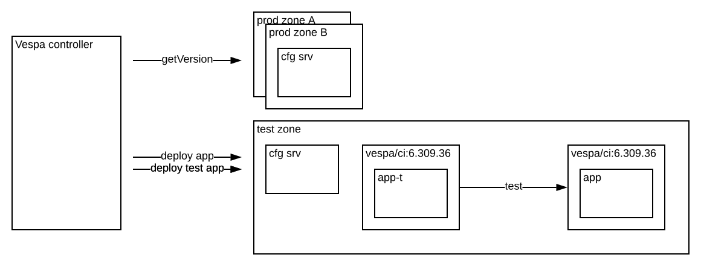

<section id="documentation" class="bg-light-blue">

<div class="row">
<div class="col-lg-12 text-left">

<h1>Automated Deployments</h1>

<p>This document explains the process - and safety mechanisms - which allows application changes and Vespa platform
releases to be continuously deployed to production.</p>

<p>
Each application package build which is submitted to hosted Vespa constitutes an application change which
must be tested and, if found healthy, <a href="../documentation/reference/deployment.html">deployed</a>.
Similarly, each change to the Vespa platform, by the Vespa team, must be tested and deployed for all the hosted applications.
Hosted Vespa automates all these tests and deployments, with features including:
<ul>
  <li>chained runs of tests and deployment, with retries of failed jobs;</li>
  <li>separation of application and platform changes, making it easier to pinpoint breaking changes
    (application changes are always allowed when an upgrade fails, as they may be necessary to fix the breakage);</li>
  <li>cancellation of any current application roll-out, upon submission of a new application revision;</li>
  <li>throttling of platform upgrades, to detect unhealthy upgrades with a subset of applications; and</li>
  <li>cancellation of platform upgrades which seem unhealthy, across all applications.</li>
</ul>
With <em>Continuous Integration (CI)</em> <!-- link to something later -->
that builds and submits changes to the application as they are committed, hosted Vespa thus provides
full-fledged Continuous Deployment (CD) of all its applications, both for application developers, and for the Vespa team.
</p>


<h2 id="deployment-orchestration">Deployment orchestration</h2>
<p>
Vespa applications are <em>compiled</em> against one version of the Vespa Java artifacts, 
and then deployed to nodes in the cloud where the <em>runtime</em> Vespa version is controlled by the system. 
This runtime, or <em>platform</em>, version is also continuously updated, independently of application updates. 
This leads to a number of possible combinations of application packages and platform versions for each application.
</p><p>
Instead of a simple <i>pipeline</i>, Vespa deployments are <i>orchestrated</i> such that any deployment of an application package
<code>X</code> to a production cluster with platform version <code>Y</code> is preceded by <em>system</em> and <em>staging</em>
tests using the same version pair; and likewise for any upgrade of the platform to version <code>Y</code> of a production
cluster running an application package <code>X</code>.
Good system and staging tests therefore guard against both unfortunate changes in the application, and in the Vespa platform. 
<em><a href="#system-tests">System</a> and <a href="#staging-tests">staging</a> tests are mandatory</em>; see below for how to write them.
</p><p>
When an application or platform change has been successfully verified in a system and staging tests, it is deployed to a production zone.
This deployment job may also contain verification tests that need to succeed before the change rolls on to more zones.
Good production tests guard against propagating an unfortunate change to more than one production zone; together with a
<a href="../documentation/bcp.html">business continuation plan (BCP)</a> this may mitigate serving impact even when a bad
change slips through the system and staging tests. 
</p><p>
Status of ongoing tests and deployments is found by clicking <em>Deployment</em> in the application view in the
<a href="https://console.vespa.ai">console</a>. <!--It is possible to delay the deployment to a region 
by clicking the <em>pause</em> button, and to force through a deployment by clicking the <em>deploy</em> button. -->
Examples of advanced deployment configuration which can be set in
<a href="../documentation/reference/deployment.html">deployment.xml</a> include:
<ul>
  <li>Deployment order and parallelism</li>
  <li>Time windows with no deployments</li>
  <li>Grace periods between deployments</li>
</ul>
</p>


<h2 id="system-tests">System tests</h2>
<p>
When a Vespa application is built with the <code>fat-test-application</code> profile —
<code>mvn package -Pfat-test-application</code> — all Java JUnit5 tests with the <code>@SystemTest</code> annotation, 
and all their dependencies, are stored in a separate test code artifact, which is submitted to the hosted Vespa cloud
together with the application package. During an automated system test, a fresh test deployment is created, and
the system tests in the test artifact are run to verify the test deployment behaves as expected.
</p><p>
The <em>system test framework</em> in <code>com.yahoo.vespa:tenant-cd</code> contains tools for runtime-dependent authentication
against the Vespa deployment to test, and for endpoint discovery. The default behavior of <code>mvn package vespa:deploy</code>
is to deploy to the <a href="../documentation/developing-with-vespa.html">dev environment</a>,
and the default behavior of <code>mvn test -Dtest.categories=system</code> is to run system tests against this dev deployment.
The <em>tenant</em>, <em>application</em> and <em>instance</em> (or <code>"default"</code>) properties from the <em>pom.xml</em>
are used for this. Tests can also be run from an IDE without additional setup. 
See <a href="https://github.com/vespa-enging/sample-apps/basic-search-hosted">this application</a> for sample system tests.
</p><p>
During automated tests, the deployment is instead done to the
<a href="../documentation/reference/environments.html#test">test environment</a>, with the same application package and Vespa runtime 
combination as is to be deployed in production; and when the tests are run, the endpoints from the test deployment are used.
The test deployment is empty when the test execution begins, and is torn down again when it ends, so documents must be fed
as part of the system test. The size of each test cluster is by default reduced to 1 node.
</p><p>

</p><p>
It's also possible to use local endpoints, e.g., in a docker container on the development machine, in the system tests;
specify <code>-Dvespa.test.config=/some/path/to/test/config/json</code> and put a JSON file there, which has the endpoints
for each of the clusters defined in <em>services.xml</em>, like:
<pre>
{
  "localEndpoints": {
    "default": "https://localhost:8080/",
    "container": "https://localhost:8081/"
  }
}
</pre>
</p>


<h2 id="staging-tests">Staging tests</h2>
<p>
Just like tests with the <code>@SystemTest</code> annotation, tests with the <code>@StagingTest</code> and
<code>@StagingSetup</code> annotations are also included in the test artifact. These are run in the automated
staging test job, also against a fresh deployment. The goal of a staging test, however, is not to ensure the new
deployment satisfies its functional specifications, like in the system test; rather, it is to ensure the upgrade
of an existing production cluster is safe, and compatible with the behaviour expected by existing clients. 
</p><p>
A staging test may, for instance, test an upgrade from application package <code>X</code> to <code>X+1</code>, and from
platform version <code>Y</code> to <code>Y+1</code>. The staging test then consists of the following steps:
<ol>
  <li>Deploy the initial pair <code>X, Y</code> to the <a href="../documentation/reference/environments.html#staging">staging environment</a>.</li>
  <li>Populate the deployment with data, making it reasonably similar to a production deployment. This is done by the <code>@StagingSetup</code>-annotated code, which typically feeds a set of static documents.</li>
  <li>Upgrade the deployment to the target pair <code>X+1, Y+1</code>.</li>
  <li>Verify the deployment works as expected after the upgrade. This is done by the <code>@StagingTest</code>-annotated code.</li>
</ol>
</p><p>
Because the staging tests are there to verify continued service during an upgrade, it is important to hold off changes in the staging
tests until new application changes are completely rolled out, and all clients updated. With a significant change, the work flow is to
<ol>
  <li>update the application code and the system and production tests,</li>
  <li>deploy the change,</li>
  <li>update all clients, and, possibly, the documents of the application, and <em>then</em></li>
  <li>update the staging tests to expect the new functionality, and, possibly, its setup phase to use the new documents.</li>
</ol>
</p><p>
Staging tests can also be run against a dev deployment, or against a local Vespa deployment, just like system tests. Specify
<code>-Dtest.categories=staging-setup</code> for the setup code, and <code>-Dtest.categories=staging</code> for the actual tests.
To deploy to a certain platform version, use, e.g., <code>mvn vespa:deploy -DvespaVersion=1.2.3</code>.

<p>The sizes of clusters in staging are by default reduced to 10% of the size specified in services.xml, or at least 2 nodes.</p>


<h2 id="production-tests">Production tests</h2>
<p>
Finally, tests may also be annotated with the <code>@ProductionTest</code> annotation. These are run against production after deployment,
and any failure will prevent roll-out to further production zones. Make sure the tests do not modify production data in an unintended fashion.
</p><p>
Production jobs run sequentially by default, but can be configured to run in parallel,
in <a href="../documentation/reference/deployment.html">deployment.xml</a>; inside each zone, Vespa itself orchestrates
the deployment, such that the application may continue to serve, even as subsets of its nodes are down for upgrade.
</p><p>
To run production tests manually, use an IDE, or run all tests with <code>mvn test -Dtest.categories=production</code>.
This, again, assumes there is a dev deployment to run the tests against. To run a production test against a production
deployment, specify <code>-Denvironment=prod -Dregion=&lt;region name&gt;</code> to <code>mvn test</code> on the command line,
or as a VM argument in your IDE. <strong>Be careful not to run system or staging tests against production deployments.</strong>
</p>


<h2 id="deleting-an-application">Deleting an application</h2>
<p>
<ol>
  <li><a href="../documentation/reference/deployment.html#region">Remove deployments in all regions</a>, then run the CI job.</li>
  <li>Delete the application in the <a href="https://console.vespa.ai">console</a>.</li>
  <li>Delete the CI job that builds and pushes new artifacts.</li>
</ol>
</p>


<h2 id="feature_switches_and_bucket_tests">Feature switches and bucket tests</h2>
<p>
With CD, it is not possible to hold off releasing a feature until it is done, test it manually until 
convinced it works and then release it to production. What to do instead?
The answer is <em>feature switches</em>: release new features to production as they are developed,
but include logic which keeps them deactivated until they are ready,
or until they have been verified in production with a subset of users.
</p><p>
<em>Bucket tests</em> is the practice of systematically testing new features or behavior for a controlled subset of users.
This is common practice when releasing new science models,
as they are difficult to verify in test, but can also be used for other features.
</p><p>
To test new behavior in Vespa, use a combination of <em>search chains</em>
and <em>ranking profiles</em>, controlled by <em>query profiles</em>,
where one query profiles correspond to one bucket.
These features support inheritance to make it easy to express variation without repetition.
</p><p>
Some times a new feature require incompatible changes to a data field.
To be able to CD such changes, it is necessary to create a new field containing the new version of the data.
This costs extra resources but less than the alternative: standing up a new system copy with the new data.
New fields can be added and populated while the system is live.
<p></p>
It should be mentioned that the need for incompatible changes can be decreased by making the semantics of the fields more precise.
E.g., if a field is defined as the "quality" of a document, where a higher number means higher quality,
a new algorithm which produces a different range and distribution will typically be an incompatible change.
However, if the field is defined more precisely as the average time spent on the document once it is clicked,
then a new algorithm which produces better estimates of this value will not be an incompatible change.
Using precise semantics also have the advantage of making it easier to understand
if the use of the data and its statistical properties are reasonable.
</p>


<h2 id="integration_testing">Integration testing</h2>
<p>
Another challenge with CD is integration testing across multiple services:
another service depends on this Vespa application for its own integration testing.
There are two ways to provide this: Either create an additional <em>application instance</em> for testing
or use test data in the production instance.
Using test data in production requires that some thought is given to separating this data from the real
data in queries. A separate instance gives complete isolation but with some additional overhead and may
not produce quite as realistic testing of queries since those will run only over the test data in the
separate instance.
</p>


<h2 id="change-field-type">Change field type</h2>

<p>Changing a field's type is a breaking change and not allowed. The CD way of changing field type is
  to do such changes in multiple steps: Add a new field with the new desired type, populate the new field,
change all operations to use the new field, then remove the old field.
See <a href="http://docs.vespa.ai/documentation/reference/search-definitions-reference.html#modify-search-definitions">
Changing live search definitions</a>.

<p>Note that removing a field from the search definition does not drop the data immediately.
This is to prevent accidental data loss from bad configuration - one can revert the change and get the data back.
An implication is that you cannot remove a field and add it again immediately with another data type -
updates to documents with the new type will fail.
The field data will automatically be removed by Vespa as sufficient time has passed.
</p>

</div>
</div>
</section>